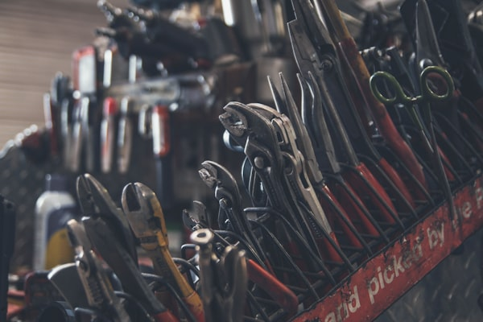

Power tools designed for professional trades
Rugged power tools engineered to withstand the demands of commercial and residential construction. From framing to finishing, Yolong delivers the power and reliability professionals demand.

Professional tools designed for automotive repair and maintenance. High-torque impact wrenches and precision drivers for every automotive application.

Precise cutting and finishing tools for professional woodworkers. From rough cutting to fine detail work, achieve perfect results every time.

Industrial-grade tools for cutting, grinding, and finishing metal. Built to handle the toughest materials with precision and power.